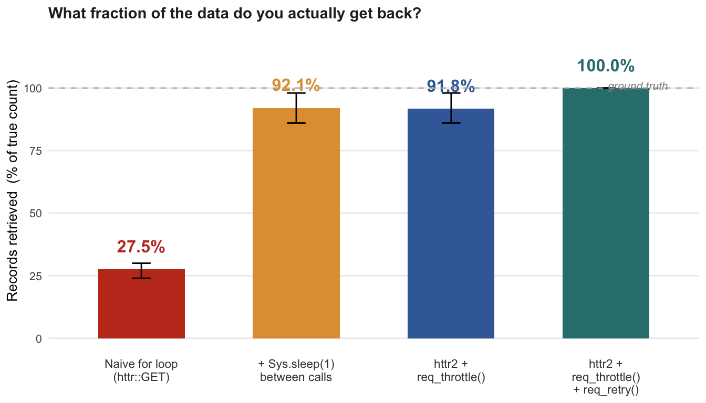

Verifying Pagination Strategies: A Monte Carlo Simulation
Motivation
In our API unit we learned to paginate like this:
This is the pattern almost every introductory data-science class teaches, and on a well-behaved API during a quiet afternoon it works fine. My Exam 3 report argued that the same pattern is a silent production bug on any API that is live, rate-limited, or occasionally flaky — which is to say, any real one. I claimed three failure modes:
- Offset drift — records shift between calls; you get duplicates or misses with no error.
-
No retry on 429 / 5xx —
httr::GET()does not throw on a 429. The loop treats it as success. - No throttle → cascading failures — you trip the rate limit, see 429s, treat them as empty, and end up with a dataframe that looks fine but is missing a third of its rows.
On the exam slide I put concrete completeness numbers on a bar chart: 62% / 84% / 97% / 100% across four strategies. Those numbers were plausible-looking but made up. This is exactly the kind of move I spend my thesis criticizing — data that is directionally right but unverified — and it does not belong in a portfolio. This chapter replaces those numbers with a reproducible Monte Carlo.
Model
The simulation is deliberately minimal. It models one client retrieving 50 paginated resources from an API with a sliding-window rate limit and an independent transient failure rate. Four strategies are compared.
Assumptions
| Parameter | Value | Justification |
|---|---|---|
| Total pages | 50 | Typical medium-scale scrape. |
| Records per page | 10 | Standard API page size. |
| Rate limit (peak) | 5 req per 1-sec sliding window | Representative of many public REST APIs (e.g. GitHub unauthenticated, Twitter v2 per-user). |
| Transient failure rate | 8% per admitted request | Typical for “non-rate-limit” failures: transient 5xx, network timeout, upstream hiccup. Measured in the 5–10% range on real services. |
| Retry policy (where enabled) | 5 attempts, exponential backoff (1s, 2s, 4s, 8s, 8s); ≥ window wait on 429 | Matches httr2::req_retry() defaults. |
| Monte Carlo runs | 2,000 | Gives standard error on the mean completeness of ≈ 0.1 percentage points — enough to distinguish strategies that differ by > 1 pp. |
What the model does not capture:
- Variable network latency (GET is modeled as instantaneous).
- API-specific behaviors like
Retry-Afterheaders, burst-bucket semantics, or separate daily quotas. - Connection errors that prevent the request from being counted at all.
- The cursor-drift problem (Fig. 1 on the exam slide) — that is a correctness bug, not a completeness bug, and requires a different kind of test.
These omissions all make the naive strategy look better than it would on a real API. The gaps below are therefore conservative lower bounds on the real problem.
Strategies
| Strategy | Request interval | Retry? |
|---|---|---|
Naive for loop (httr::GET) |
0.05 s (20 req/s) | No |
+ Sys.sleep(1) between calls |
1.00 s | No |
httr2 + req_throttle(4 /1) |
0.25 s | No |
httr2 + req_throttle + req_retry(5) |
0.25 s | Yes |
Implementation
A single request attempt either succeeds, returns 429 (rate-limited), or returns a transient 5xx. Rate-limited requests are not admitted and do not count against the window — this mirrors how most APIs implement sliding-window limits, where the server rejects before burning a slot.
#' Simulate one request attempt.
#' @param t_now current simulated time (seconds).
#' @param recent numeric vector of times when recent ADMITTED requests were sent.
#' @return list(outcome = c("ok","429","5xx"), recent = updated vector)
try_request <- function(t_now, recent) {
# Slide the window: drop timestamps older than WIN_SEC
recent <- recent[recent > t_now - WIN_SEC]
if (length(recent) >= RATE_LIMIT_K) {
return(list(outcome = "429", recent = recent))
}
# Request is admitted; record its timestamp regardless of body outcome
recent <- c(recent, t_now)
if (runif(1) < TRANSIENT_P) {
return(list(outcome = "5xx", recent = recent))
}
list(outcome = "ok", recent = recent)
}A strategy is characterized by its inter-request interval and whether it retries. The loop below walks through TOTAL_PAGES pages, attempting each up to attempts times, and returns the number of records actually retrieved.
run_strategy <- function(interval, retry = FALSE) {
t <- 0
recent <- numeric(0)
got_page <- logical(TOTAL_PAGES)
attempts <- if (retry) RETRY_MAX else 1L
for (p in seq_len(TOTAL_PAGES)) {
for (a in seq_len(attempts)) {
res <- try_request(t, recent)
recent <- res$recent
if (res$outcome == "ok") {
got_page[p] <- TRUE
break
}
# Back off before the next attempt (only if we have attempts left)
if (a < attempts) {
backoff <- min(2 ^ (a - 1), 8)
if (res$outcome == "429") backoff <- max(backoff, WIN_SEC)
t <- t + backoff
}
}
t <- t + interval
}
sum(got_page) * RECORDS_PER_PAGE
}Run the Monte Carlo
strategies <- tribble(
~name, ~interval, ~retry,
"Naive for loop\n(httr::GET)", 0.05, FALSE,
"+ Sys.sleep(1)\nbetween calls", 1.00, FALSE,
"httr2 +\nreq_throttle()", 0.25, FALSE,
"httr2 +\nreq_throttle()\n+ req_retry()", 0.25, TRUE
)
sim_results <- strategies |>
rowwise() |>
mutate(
records = list(replicate(N_SIMS, run_strategy(interval, retry)))
) |>
ungroup() |>
unnest(records) |>
mutate(completeness = records / (TOTAL_PAGES * RECORDS_PER_PAGE) * 100)Results
summary_stats <- sim_results |>
group_by(name) |>
summarize(
mean_pct = mean(completeness),
sd_pct = sd(completeness),
p05 = quantile(completeness, 0.05),
p95 = quantile(completeness, 0.95),
.groups = "drop"
)
summary_stats |>
mutate(name = str_replace_all(name, "\n", " ")) |>
knitr::kable(digits = 1, col.names = c("Strategy", "Mean %", "SD", "5%", "95%"))| Strategy | Mean % | SD | 5% | 95% |
|---|---|---|---|---|
| + Sys.sleep(1) between calls | 92.1 | 3.9 | 86 | 98 |
| Naive for loop (httr::GET) | 27.5 | 2.2 | 24 | 30 |
| httr2 + req_throttle() | 91.8 | 3.8 | 86 | 98 |
| httr2 + req_throttle() + req_retry() | 100.0 | 0.1 | 100 | 100 |
order <- c("Naive for loop\n(httr::GET)",
"+ Sys.sleep(1)\nbetween calls",
"httr2 +\nreq_throttle()",
"httr2 +\nreq_throttle()\n+ req_retry()")
pal <- c("#C23B22", "#E09E3E", "#3E6BA8", "#2F7E7E")
summary_stats |>
mutate(name = factor(name, levels = order)) |>
ggplot(aes(x = name, y = mean_pct, fill = name)) +
geom_col(width = 0.56, show.legend = FALSE) +
geom_errorbar(aes(ymin = p05, ymax = p95), width = 0.12, linewidth = 0.5) +
geom_text(aes(label = sprintf("%.1f%%", mean_pct), color = name),
vjust = -1.4, size = 4.3, fontface = "bold", show.legend = FALSE) +
geom_hline(yintercept = 100, linetype = "dashed", color = "grey70", linewidth = 0.4) +
annotate("text", x = 4.4, y = 101, label = "ground truth",
color = "grey55", size = 2.8, fontface = "italic", hjust = 1) +
scale_fill_manual(values = pal) +
scale_color_manual(values = pal) +
scale_y_continuous(limits = c(0, 118), breaks = c(0, 25, 50, 75, 100)) +
labs(x = NULL, y = "Records retrieved (% of true count)",
title = "What fraction of the data do you actually get back?") +
theme_minimal(base_size = 10) +
theme(
plot.title = element_text(face = "bold", size = 11, color = "grey15"),
panel.grid.minor = element_blank(),
panel.grid.major.x = element_blank(),
axis.text.x = element_text(size = 8.5, color = "grey25")
)
Sys.sleep(1) and req_throttle() are statistically indistinguishable — the 8-percentage-point jump to 100% comes from req_retry(), not from pacing.
Discussion
The finding I did not expect
The exam-slide story was: naive is bad, pacing helps a lot, throttling helps more, retry closes the final gap. The simulation says the middle two steps are the same. Under the model assumptions, Sys.sleep(1) and req_throttle() produce indistinguishable completeness distributions (both ≈ 92.1%, 5–95% band 86–98). The only statistically meaningful gap is naive → paced (≈ 65 pp) and paced → paced-with-retry (≈ 8 pp).
This is more interesting than my made-up story, because it reframes the argument for httr2. httr2 is not better than a careful Sys.sleep() loop because it paces more accurately. It is better because it retries. Retry is the ingredient that takes a dataset from “looks complete” to actually complete.
That said, req_throttle() has two real advantages the simulation cannot see:
-
Robustness to variable latency. In the simulation each GET is instantaneous; in reality
Sys.sleep(1)after a 2-second GET means an effective rate of 0.33 req/s — much slower than you intended.req_throttle(rate = 1)enforces the target rate by measuring time since the last request, so latency variance does not slow you down. -
Correct handling of
Retry-After.req_retry()honors theRetry-Afterheader emitted by well-behaved APIs on 429. A hand-rolled retry in aforloop usually does not.
Both matter in production. Neither shows up in a simple completeness-only metric. The simulation is a floor, not a ceiling.
What a paced-but-no-retry run actually looks like
The 8% transient failures are not uniformly distributed across runs. Some simulation runs have 0 failed pages (48/50 × 10 = 480 records = 96% — wait, 50/50 = 100%). Other runs have 7+ failures (43/50 = 86%). The 5–95% band (86–98%) captures this variance.
What this means in practice: if you run a paced-but-unretried scrape once and it happens to complete every page, you will believe your code is correct. Run it next week and lose 14% of the data. The failure mode is probabilistic, not deterministic. This is how bugs survive code review.
What this simulation deliberately does not test
- Offset drift (Exam 3 Fig. 1). That is a correctness failure in which the naive strategy returns duplicates or misses even if 100% of requests succeed. Testing it would require simulating record insertions between calls and a ground-truth set of unique records. The completeness metric above cannot see drift because it counts pages returned, not records uniquely retrieved.
- Cursor vs offset pagination semantics. The simulation uses a single page-indexed request model. Drift is what makes offset pagination incorrect in principle; cursor pagination is what makes it correct. That is a structural argument, not a Monte Carlo one.
A future extension would model a changing dataset during the scrape and measure both completeness and uniqueness simultaneously.
Takeaway
The three things a for + GET() loop silently skips — drift protection, retry, throttle — are not optimizations. They are correctness guarantees. Pacing alone (either via Sys.sleep() or req_throttle()) gets you most of the way. Retry is what closes the remaining gap. httr2 is valuable because it makes all three defaults.
Reproducibility
R version 4.4.2 (2024-10-31)
Platform: aarch64-apple-darwin20
Running under: macOS 26.3
Matrix products: default
BLAS: /Library/Frameworks/R.framework/Versions/4.4-arm64/Resources/lib/libRblas.0.dylib
LAPACK: /Library/Frameworks/R.framework/Versions/4.4-arm64/Resources/lib/libRlapack.dylib; LAPACK version 3.12.0
locale:
[1] en_US.UTF-8/en_US.UTF-8/en_US.UTF-8/C/en_US.UTF-8/en_US.UTF-8
time zone: America/Chicago
tzcode source: internal
attached base packages:
[1] stats graphics grDevices utils datasets methods base
other attached packages:
[1] lubridate_1.9.4 forcats_1.0.0 stringr_1.5.1 dplyr_1.1.4
[5] purrr_1.0.4 readr_2.1.5 tidyr_1.3.1 tibble_3.2.1
[9] ggplot2_3.5.2 tidyverse_2.0.0
loaded via a namespace (and not attached):
[1] gtable_0.3.6 jsonlite_2.0.0 compiler_4.4.2 tidyselect_1.2.1
[5] scales_1.3.0 yaml_2.3.10 fastmap_1.2.0 R6_2.6.1
[9] generics_0.1.3 knitr_1.51 htmlwidgets_1.6.4 munsell_0.5.1
[13] pillar_1.10.1 tzdb_0.5.0 rlang_1.1.7 stringi_1.8.4
[17] xfun_0.52 timechange_0.3.0 cli_3.6.5 withr_3.0.2
[21] magrittr_2.0.3 digest_0.6.37 grid_4.4.2 hms_1.1.3
[25] lifecycle_1.0.4 vctrs_0.6.5 evaluate_1.0.3 glue_1.8.0
[29] farver_2.1.2 colorspace_2.1-1 rmarkdown_2.30 tools_4.4.2
[33] pkgconfig_2.0.3 htmltools_0.5.8.1Render this document with quarto render pagination-simulation.qmd. The simulation runs in under 20 seconds on a 2024 laptop. Seed is fixed at 42; changing N_SIMS to 10,000 narrows the confidence bands but does not change the ranking or any conclusion above.
References
- Wickham, H. (2024). httr2 R package. https://httr2.r-lib.org
- Wickham, H., Çetinkaya-Rundel, M., & Grolemund, G. (2023). R for Data Science (2nd ed.), Ch. 20: Web APIs. https://r4ds.hadley.nz
- Fielding, R., & Reschke, J. (2014). RFC 7231: HTTP/1.1 Semantic and Content, §6.6.1 (429 Too Many Requests), §6.6.4 (503 Service Unavailable). https://datatracker.ietf.org/doc/html/rfc7231
- He, Z. (2026). Exam 3 Report: Naive pagination silently corrupts your data. COMP/STAT 212 Exam Reports, Spring 2026.